第8讲 · 一元函数积分学的概念与性质
据《张宇考研数学基础30讲·高等数学分册（2026版）》整理 · 覆盖原书 P242–P276
本讲导读
本讲是积分学三讲（第8讲概念与性质、第9讲计算、第10讲应用）的开篇，章首表格写得明白：考题就是四块——不定积分、定积分、变限积分、反常积分，题型以选择、填空为主，数一数二要求"理解+掌握"，数三降为"了解"。三条"存在性"主线要先分清：连续函数必有原函数；有界且"坏点不多"则定积分存在；变限积分只要存在就连续。这一讲概念辨析密度很高，例8.3那种"原函数存在 vs 定积分存在"的题几乎年年换皮重考，本质都是拿这三张牌做排列组合。反常积分部分先把两个 \(p\) 积分结论背下来，判敛题就有了标尺。学的时候多问一句"这个条件少了行不行"，比多刷十道计算题值钱——本讲给的是"判型"能力，第9讲的所有计算，先要靠这讲判断"算的东西存不存在、是什么"。
（站注·真题大数据）本讲内容整体属于第一梯队考点：变限积分求导再叠加极限的综合题是选择题高频出现形式，"原函数存在性与可积性辨析"是概念选择题的常青树；反常积分敛散性单独列为第二梯队（近 15 年出现 10 次以上），常以一道小题的形式稳定送分。
知识框架
- 一、不定积分
- 原函数与不定积分
- 定义：区间 \(I\) 上 \(F'(x)=f(x)\) 处处成立，\(F\) 是一个原函数；\(\int f(x)\,\mathrm{d}x=F(x)+C\) 表全体原函数
- 两条规矩：必须指明区间；\(C\) 只是记号，不定积分是"一族函数"
- 原函数（不定积分）存在定理
- 连续 \(\Rightarrow\) 必有原函数（变上限积分 \(\int_a^x f(t)\,\mathrm{d}t\) 就是现成的一个）
- 含第一类间断点（可去、跳跃）或无穷间断点 \(\Rightarrow\) 在包含该点的区间内必无原函数（达布定理：导函数有介值性）
- 振荡间断点不确定：\(2x\sin\frac1x-\cos\frac1x\) 有原函数 \(x^2\sin\frac1x\)；\(\frac1x\sin\frac1x\) 没有
- 注：\(f(x)\) 存在与 \(f'(x)\) 存在的辨析（四组单向箭头，印P246–248）
- 二、定积分
- 定义（四步：分割、近似、求和、取极限）
- 引例：曲边梯形面积、变速直线运动路程（印P250–251）
- 黎曼和 \(\sum f(\xi_k)\Delta x_k\)；极限存在且与分点、\(\xi_k\) 取法无关才叫可积
- 几何意义：\(S_{\text{上}}-S_{\text{下}}\)；值与积分变量字母无关
- 精确定义（\(n\) 等分取右端点）与 \(\int_0^1\) 特例——凑数列极限的模板
- 存在定理
- 四个充分条件：连续；单调；有界且只有有限个间断点；有有限个第一类间断点
- 必要条件：区间有限、函数有界（可积必有界）
- 性质
- 两个规定（\(b=a\)、\(a>b\)）；性质1 区间长度；性质2 线性；性质3 可加性；性质4 保号性与 \(\left|\int f\right|\le\int|f|\)
- 非负连续不恒为零 \(\Rightarrow\) 定积分严格大于零（与极限戴帽/脱帽对照）
- 估值定理 \(mL\le\int_a^b f\le ML\)；积分中值定理 \(f(\xi)(b-a)\)（\(\xi\) 可改进到开区间）
- 三、变限积分
- 概念：\(F(x)=\int_a^x f(t)\,\mathrm{d}t\)、变下限、上下限都变——本质是"由定积分定义的函数"
- 性质
- \(f\) 可积 \(\Rightarrow F\) 连续（存在就连续）
- \(f\) 连续 \(\Rightarrow F\) 可导且 \(F'=f\)（微积分基本定理 / 原函数存在定理）
- 唯一跳跃间断点处：\(F\) 连续不可导，\(F'_{\mp}(x_0)=\lim_{x\to x_0^{\mp}}f(x)\)；唯一可去间断点处：\(F\) 可导但 \(F'(x_0)\ne f(x_0)\)
- 计算装备：被积函数含 \(x\) 先拆项提出；上下限都是函数时分段相减（习题8.3）
- 四、反常积分
- 概念
- 无穷区间（定义1）：三个定义式；\(\int_{-\infty}^{+\infty}\) 必须拆两段各自收敛
- 无界函数（定义2，瑕积分）：瑕点在端点/内部；内部必拆
- 奇点唯一原则：一个积分只允许一个奇点，多了必须拆；\(\infty\) 与瑕点统称奇点
- 判敛
- 比较判别法与极限形式（\(\lambda\ne0,\infty\) 同敛散；\(\lambda=0\)、\(\lambda=\infty\) 单向推）
- 两个 \(p\) 积分标尺 + 发挥：\(\sin^p x\)、\((ax+b)^p\)、对数版本
- 幂判敛补充：\(\lim x^p f(x)=\lambda\ge0\)（\(p>1\)）则收敛
- 对称区间奇偶性：前提是收敛，\(\int_{-\infty}^{+\infty}x^3\,\mathrm{d}x\ne0\)
- 习题与自测：7 道习题正好覆盖四块（存在性、变限求导、凑定义、比大小、取整跳跃、对数 \(p\) 积分）
核心概念与定理
定义8.1 原函数与不定积分
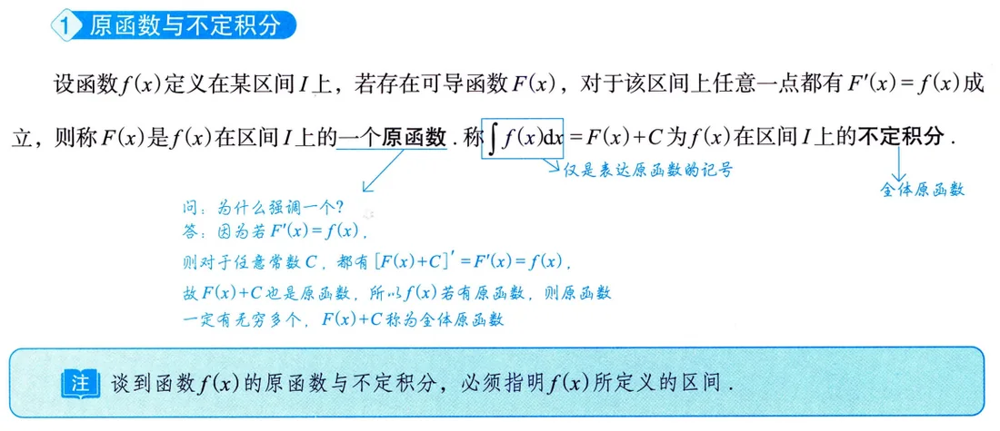
设函数 \(f(x)\) 定义在某区间 \(I\) 上，若存在可导函数 \(F(x)\)，对该区间上任意一点都有 \(F'(x)=f(x)\) 成立，则称 \(F(x)\) 是 \(f(x)\) 在区间 \(I\) 上的一个原函数；称 \(\int f(x)\,\mathrm{d}x=F(x)+C\) 为 \(f(x)\) 在区间 \(I\) 上的不定积分，它表示全体原函数，\(C\) 只是表达原函数的记号。书上特别标注两条：谈到原函数与不定积分，必须指明 \(f(x)\) 所定义的区间——"\(F'(x)=f(x)\)"是区间上的事，不是逐点的事；不定积分是一个函数族，不是某一个函数。这套记号是莱布尼茨首创的（积分号是 sum 的首母拉长），书章首有讲。
用法上抓住一条：见到 \(\int f(x)\,\mathrm{d}x=G(x)+C\) 这种等式，等价于说 \(G'(x)=f(x)\)，两边求导就能把埋在里面的 \(f\) 挖出来——例8.1 就是这个动作。
定理8.1 原函数（不定积分）存在定理
(1) 连续函数必有原函数。 而且书上直接造出一个来：若 \(f(x)\) 在 \([a,b]\) 上连续，则 \(F(x)=\int_a^x f(t)\,\mathrm{d}t\) 在 \([a,b]\) 上可导且 \(F'(x)=f(x)\)（证明用区间可加 + 积分中值定理，建议在草稿上亲手过一遍）。所以 \(f(x)\) 连续时有两件事同时成立：
\[ \int f(x)\,\mathrm{d}x=\int_a^x f(t)\,\mathrm{d}t+C,\qquad \left[\int_a^x f(t)\,\mathrm{d}t\right]'=f(x). \]
下面这张总结框把定积分（静态面积）、变上限积分（动态面积）、积分中值定理 \(\int_a^b f(x)\,\mathrm{d}x=f(\xi)(b-a)\) 一图串齐，值得整张存下来。
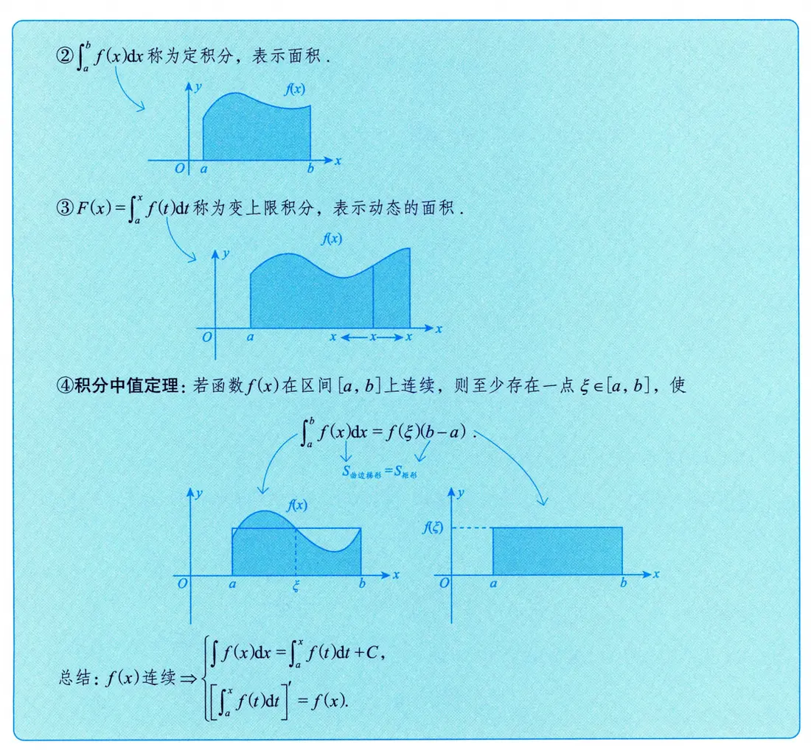
(2) 什么样的函数必没有原函数？ 含有第一类间断点（可去、跳跃）和无穷间断点的函数 \(f(x)\)，在包含该间断点的区间内必没有原函数 \(F(x)\)。道理是导函数不能有第一类间断点（达布定理：导函数虽然可以不连续，但必有介值性，因而不能发生跳跃），书上分可去、跳跃、无穷三种情形用洛必达（或介值）证给你看了。
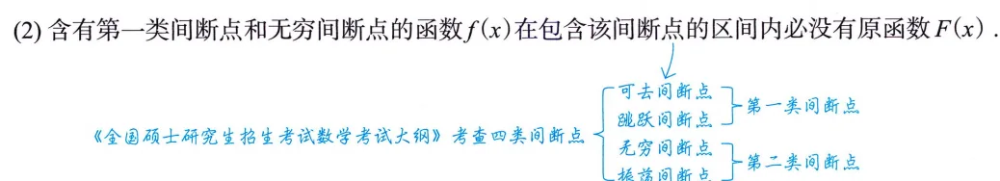
(3) 振荡间断点处原函数可能存在，也可能不存在（印P249）。正例：\(f_1(x)=2x\sin\frac1x-\cos\frac1x\)（补充 \(f_1(0)=0\)）在 \(x=0\) 振荡，却有原函数 \(F_1(x)=x^2\sin\frac1x\)（\(F_1(0)=0\)）；反例：\(f_2(x)=\frac1x\sin\frac1x\)（补充 \(f_2(0)=0\)）同样在 \(x=0\) 振荡（无界振荡），却没有原函数。注意别拿"无界"当理由——例8.3②里 \(x^2\sin\frac1{x^2}\) 的导函数同样无界却存在，振荡幅度被 \(x^2\) 压住才是有原函数的那一类；\(\frac1x\sin\frac1x\) 这类压不住的，书上直接给"无原函数"的结论，基础阶段记住这对正反例即可。这一正一反两个例子是命题热点，建议把 \(x^2\sin\frac1x\)、\(x^2\cos\frac1x\) 这一族原函数记熟。
配套的还有一段"函数存在与导函数存在的辨析"（印P246–248），把四个方向的单向箭头理清楚：
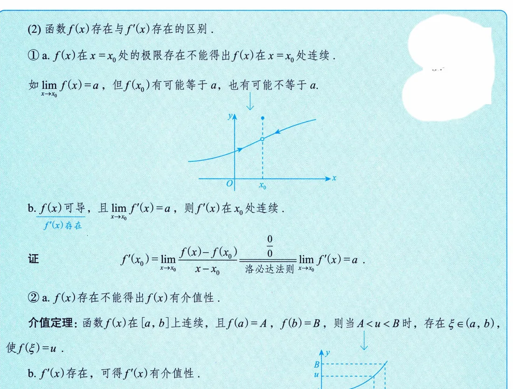
- \(\lim_{x\to x_0}f(x)=a\) 存在，推不出 \(f\) 在 \(x_0\) 连续（\(f(x_0)\) 可等于可不等于 \(a\)），更推不出 \(f\) 在 \(x_0\) 可导；
- \(\lim_{x\to x_0}f'(x)=a\) 存在，推不出 \(f'(x_0)\) 存在；
- \(f'(x_0)\) 存在，推不出 \(\lim_{x\to x_0}f'(x)\) 存在——反例就是 \(F(x)=x^2\cos\frac1x\)（\(F(0)=0\)）：\(F'(0)=0\) 存在，但 \(F'(x)=2x\cos\frac1x+\sin\frac1x\) 在 \(x\to0\) 时振荡无极限（印P247–248）。
结论落点（印P248 注）：可导函数的导函数 \(F'(x)\) 不一定连续，最多含振荡间断点，绝不会含第一类间断点——这正是"必无原函数"判定的理论根子。
定义8.2 定积分（黎曼和定义）
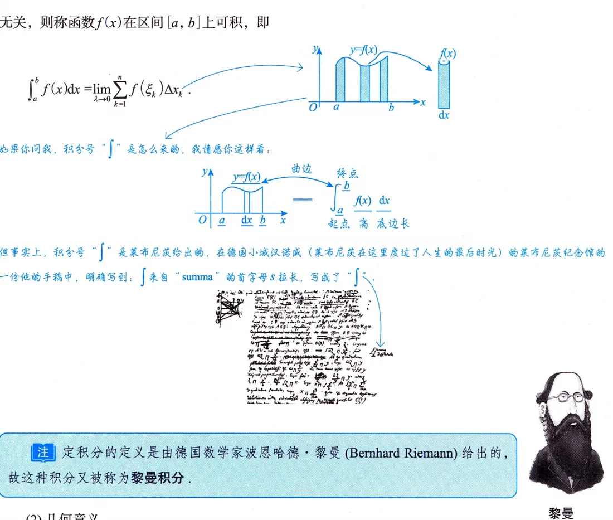
定义分四步走：分割、近似、求和、取极限。设 \(f(x)\) 在 \([a,b]\) 上有界，任意插入 \(n-1\) 个分点 \(a=x_0<x_1<\cdots<x_n=b\)，记 \(\Delta x_k=x_k-x_{k-1}\)，任取 \(\xi_k\in[x_{k-1},x_k]\)，作和 \(\sum_{k=1}^{n}f(\xi_k)\Delta x_k\)（黎曼和）；若当 \(\lambda=\max\{\Delta x_1,\dots,\Delta x_n\}\to0\) 时极限存在，且极限值与分点的插法及 \(\xi_k\) 的取法无关，则称 \(f(x)\) 在 \([a,b]\) 上可积，极限值记作 \(\int_a^b f(x)\,\mathrm{d}x\)。两个"任取"加"无关"是定义的命门：要是极限依赖取法，就不叫可积。这个定义是黎曼给出的，又叫黎曼积分。
书的引入走两个老问题（印P250–251）：曲边梯形面积（以直代曲，窄条矩形近似）、变速直线运动路程（匀速近似变速）——两件事数学结构一模一样，抽象出来就是定积分。几何意义：\(f(x)\ge0\) 时 \(\int_a^b f\,\mathrm{d}x\) 是曲边梯形面积；\(f(x)\le0\) 时是面积的负值；有正有负时等于 \(x\) 轴上方面积减下方面积（\(S_{\text{上}}-S_{\text{下}}\)）。另外定积分的值只与被积函数及积分区间有关，与积分变量用什么字母无关：\(\int_a^b f(x)\,\mathrm{d}x=\int_a^b f(t)\,\mathrm{d}t=\int_a^b f(u)\,\mathrm{d}u\)——这为后面变限积分里 "\(x\) 是外层变量、\(t\) 是积分变量"的双字母制埋好伏笔。
定义8.3 定积分的精确定义（\(n\) 等分取右端点）
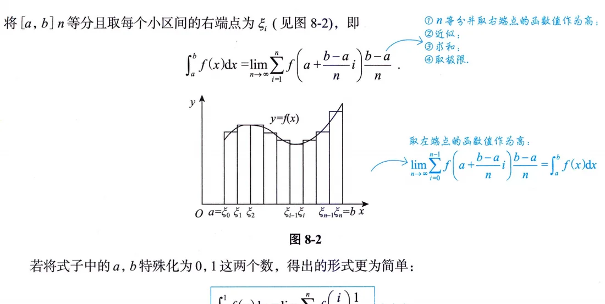
把定义里两个"任取"特取成"\(n\) 等分 + 每个小区间右端点"，就得到考研最常用的精确定义：
\[ \int_a^b f(x)\,\mathrm{d}x=\lim_{n\to\infty}\sum_{i=1}^{n}f\!\left(a+\frac{b-a}{n}i\right)\frac{b-a}{n},\qquad \int_0^1 f(x)\,\mathrm{d}x=\lim_{n\to\infty}\sum_{i=1}^{n}f\!\left(\frac{i}{n}\right)\frac1n . \]
\([0,1]\) 特例是数列极限凑定义的万能模板：\(n\) 项和的极限，提出 \(\frac1n\)、凑出 \(\frac{i}{n}\)，就把和式读成 \(\int_0^1\)（用法见例8.6、习题8.4）。方向别忘：是"和式极限 = 积分"，反过来给定积分也能拆成和式极限，两边都出题。
定理8.2 定积分的存在定理（可积条件）
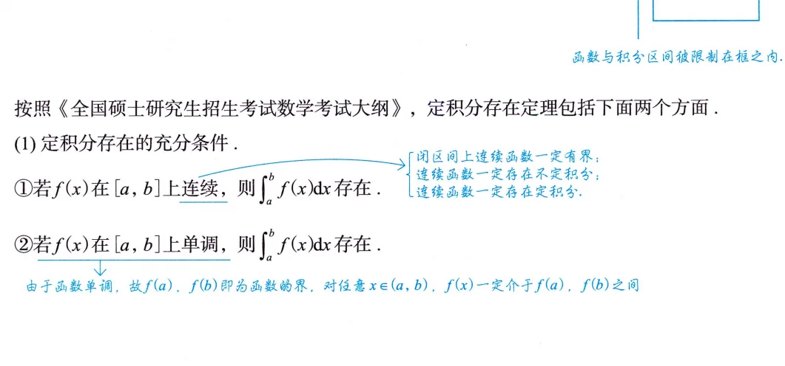
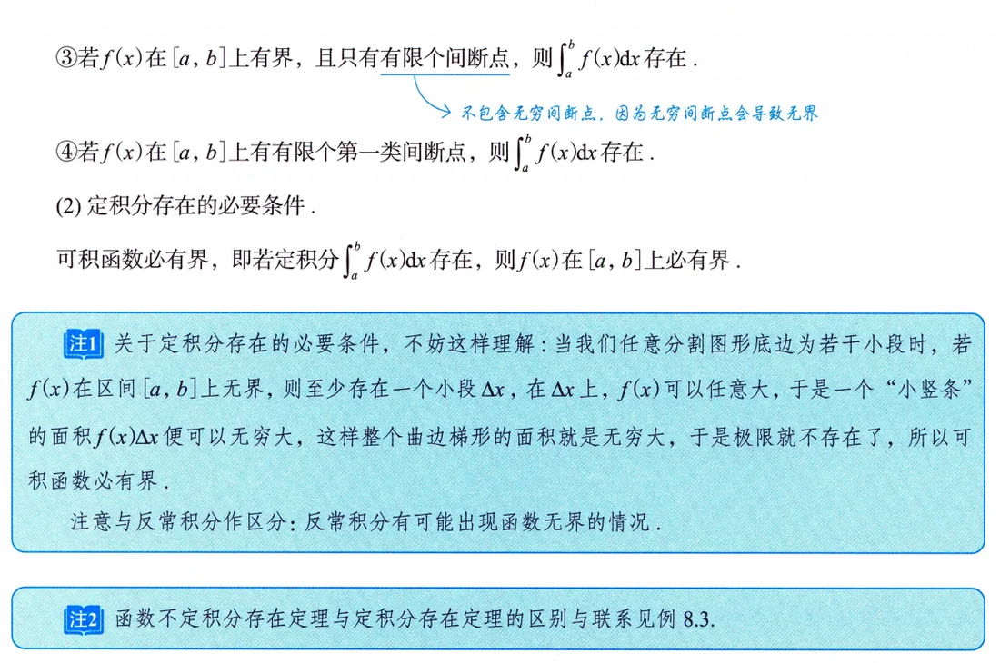
充分条件四条：\(f(x)\) 在 \([a,b]\) 上 ① 连续；② 单调；③ 有界且只有有限个间断点；④ 有有限个第一类间断点——满足其一即可积。注意③④里的间断点不能是无穷间断点：无穷间断点导致无界，直接踩爆必要条件。必要条件两条：积分区间有限、\(f(x)\) 在 \([a,b]\) 上有界（可积必有界）。判定顺序养成习惯：先验有界性（无界直接不可积），再数坏点。四个充分条件都是"管够不管要"——不满足也可能可积，但考研层面够用了。
定理8.3 定积分的性质（两个规定与性质1–4）
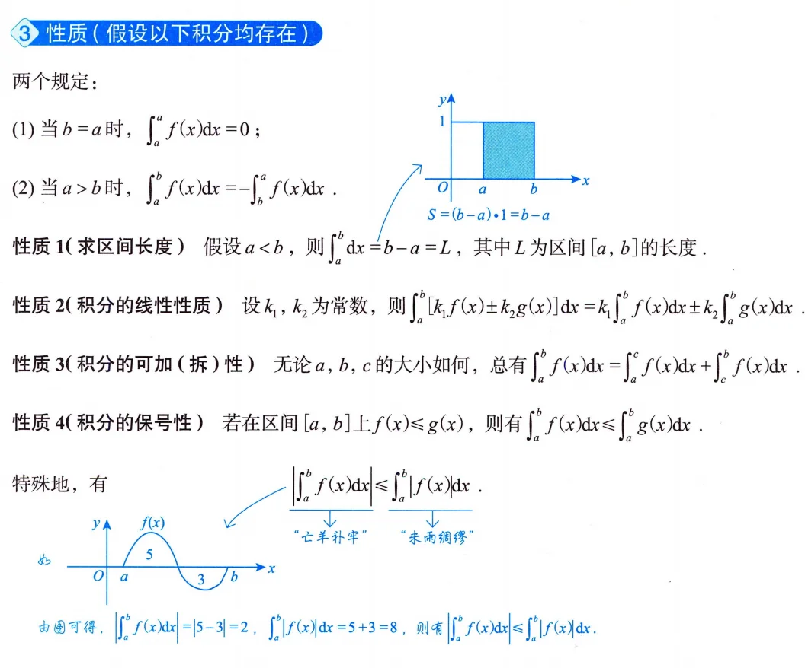
先记两个规定：\(b=a\) 时 \(\int_a^a f(x)\,\mathrm{d}x=0\)；\(a>b\) 时 \(\int_a^b f(x)\,\mathrm{d}x=-\int_b^a f(x)\,\mathrm{d}x\)（交换上下限变号，这规定让性质对任意 \(a,b\) 都成立）。然后（以下均假设积分存在）：
- 性质1（区间长度） \(\int_a^b\mathrm{d}x=b-a=L\)——被积函数为 1 的积分就是区间长；
- 性质2（线性性） \(\int_a^b[\alpha f(x)+\beta g(x)]\,\mathrm{d}x=\alpha\int_a^b f\,\mathrm{d}x+\beta\int_a^b g\,\mathrm{d}x\)；
- 性质3（区间可加性） \(\int_a^b f\,\mathrm{d}x=\int_a^c f\,\mathrm{d}x+\int_c^b f\,\mathrm{d}x\)，无论 \(a,b,c\) 大小如何——分段函数积分、拆区间判敛全靠它；
- 性质4（保号性） \(f\le g\Rightarrow\int_a^b f\le\int_a^b g\)（要求 \(a<b\)）；特例 \(\left|\int_a^b f\,\mathrm{d}x\right|\le\int_a^b|f|\,\mathrm{d}x\)（"和的绝对值不超过绝对值的积分"）。
保号性后面跟了一条很有用的注（印P255）：\(f(x)\) 在 \([a,b]\) 上非负连续且不恒为零，则必有 \(\int_a^b f(x)\,\mathrm{d}x>0\)（严格大于零，证明见例8.7）。这里和极限的"戴帽/脱帽"对照着记：极限世界 \(f>0\) 只能保 \(\lim f\ge0\)（脱帽严格、戴帽不严格），而积分世界靠连续性可以把非严格升级成严格——证积分严格不等式时这是命门。
定理8.4 估值定理与积分中值定理
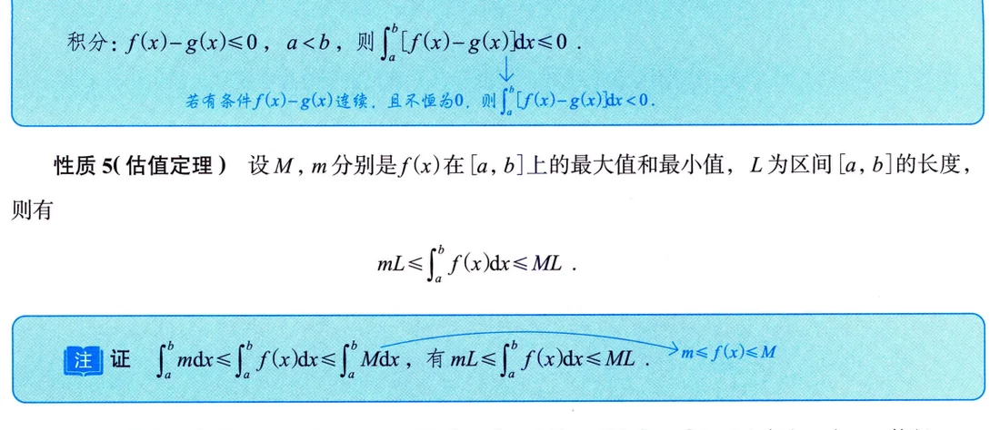
性质5（估值定理）：设 \(M,m\) 分别是 \(f(x)\) 在 \([a,b]\) 上的最大、最小值，则 \(mL\le\int_a^b f(x)\,\mathrm{d}x\le ML\)。用于"估积分范围""证明积分介于两数之间"这类题，先找 \(m,M\) 再套。
性质6（积分中值定理，★★★）：\(f(x)\) 在 \([a,b]\) 上连续，则至少存在一点 \(\xi\in[a,b]\)，使 \(\int_a^b f(x)\,\mathrm{d}x=f(\xi)(b-a)\)。证明就两步：估值定理夹住平均值，再用闭区间连续函数的介值定理。几何意义是"曲边梯形面积 = 某个同宽矩形面积"，\(f(\xi)\) 叫积分平均值。想要 \(\xi\in(a,b)\)（开区间），两种升级证法见例8.8（变限函数 + 拉格朗日、常数 \(k\) + 罗尔），考研大题可直接使用 \(k\) 法结论。见到 \(\int_a^b f(x)\,\mathrm{d}x\)，要么上中值定理，要么改成 \(\int_a^x f(t)\,\mathrm{d}t\) 作辅助函数——这两板斧后面章节反复用。
定义8.4 变限积分
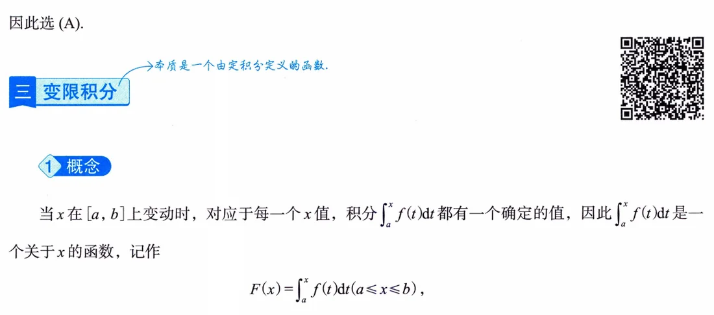
当 \(x\) 在 \([a,b]\) 上变动时，\(\int_a^x f(t)\,\mathrm{d}t\) 对每个 \(x\) 有唯一确定的值，所以它是一个关于 \(x\) 的函数，称为变上限的定积分；类似有变下限 \(\int_x^b f(t)\,\mathrm{d}t\) 和上下限都变的 \(\int_{\varphi_1(x)}^{\varphi_2(x)}f(t)\,\mathrm{d}t\)，统称变限积分——本质就是一个由定积分定义的新函数。看它的时候盯紧双字母制：\(x\) 是自变量（外层），\(t\) 是积分变量（内层哑元）。它是本章与极限、导数、微分方程一切综合题的接线柱。
定理8.5 变限积分的连续性与可导性（微积分基本定理）
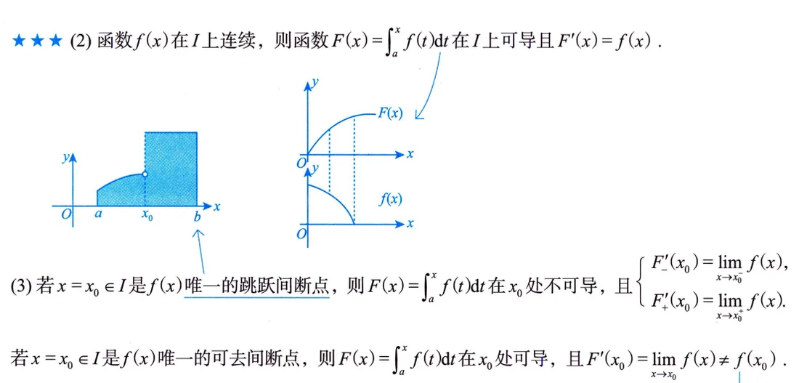
三条性质（印P261–262，本讲最核心的考点之一）：
- \(f(x)\) 在 \(I\) 上可积 \(\Rightarrow F(x)=\int_a^x f(t)\,\mathrm{d}t\) 在 \(I\) 上连续。证明一行：\(|F(x+\Delta x)-F(x)|=\left|\int_x^{x+\Delta x}f\,\mathrm{d}t\right|\le M|\Delta x|\)（可积必有界，\(|f|\le M\)）。变限积分只要存在就必连续，这一点和 \(f(x)\) 本身"存在（可积）不一定连续"要区分开——"\(f\) 间断、\(F\) 连续"不是矛盾，是常态。
- \(f(x)\) 在 \(I\) 上连续 \(\Rightarrow F(x)\) 在 \(I\) 上可导且 \(F'(x)=f(x)\)（★★★，微积分基本定理 / 原函数存在定理的微分形式）。这是"连续必有原函数"的定量版本。
- 一般变限积分求导（第9讲细练）：\(\left[\int_{\varphi_1(x)}^{\varphi_2(x)}f(t)\,\mathrm{d}t\right]'=f(\varphi_2(x))\varphi_2'(x)-f(\varphi_1(x))\varphi_1'(x)\)；被积函数里含 \(x\) 时不能直接套，先拆项把 \(x\) 提到积分号外（见例8.11）。
定理8.6 间断点处变限积分的可导性（跳跃与可去）
性质3（印P262，选择题专业户）：设 \(F(x)=\int_a^x f(t)\,\mathrm{d}t\)，
- 若 \(x=x_0\) 是 \(f(x)\) 唯一的跳跃间断点，则 \(F(x)\) 在 \(x_0\) 处不可导，且 \(F'_-(x_0)=\lim\limits_{x\to x_0^-}f(x)\)、\(F'_+(x_0)=\lim\limits_{x\to x_0^+}f(x)\)（左右导数 = \(f\) 的左右极限）；
- 若 \(x=x_0\) 是唯一的可去间断点，则 \(F(x)\) 在 \(x_0\) 处可导，且 \(F'(x_0)=\lim\limits_{x\to x_0}f(x)\ne f(x_0)\)。
后半句有个重要推论（例8.13 注）：可去间断点处 \(F'(x_0)\ne f(x_0)\)，所以此时 \(F\) 不是 \(f\) 的原函数——\(F'=f\) 必须逐点成立才算原函数，差一点都不行。这套"跳跃不可导、可去可导但导数值漂移"的机制，配合例8.12、例8.13、习题8.6 三道题吃透。
定义8.5 无穷区间上的反常积分
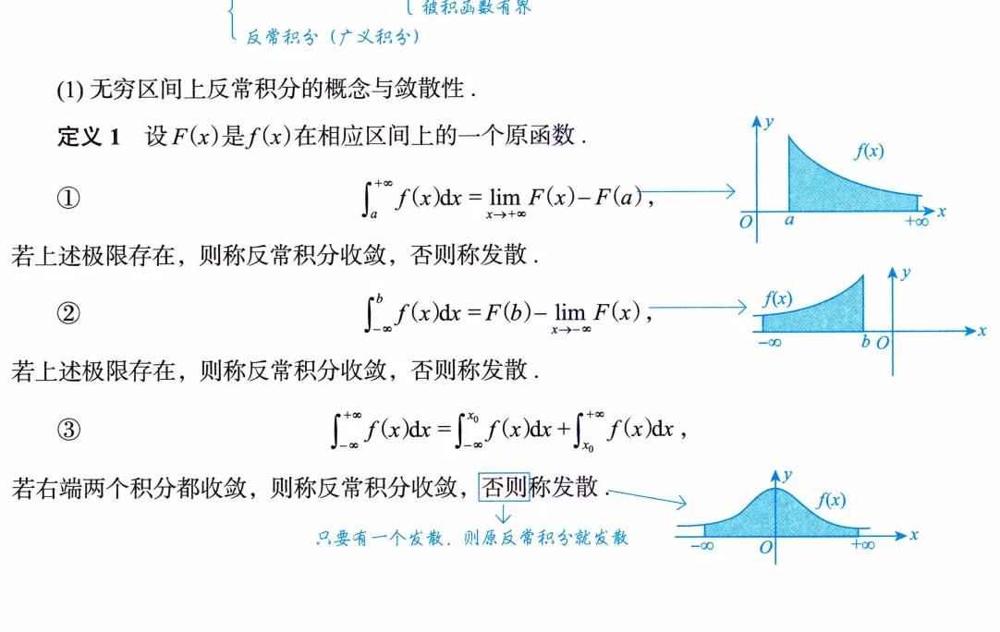
定积分存在有两个必要条件：区间有限、函数有界。破坏前者引出无穷区间上的反常积分，破坏后者引出无界函数的反常积分（瑕积分）。设 \(F(x)\) 是 \(f(x)\) 的原函数：
\[ \int_a^{+\infty}f(x)\,\mathrm{d}x=\lim_{x\to+\infty}F(x)-F(a),\qquad \int_{-\infty}^{b}f(x)\,\mathrm{d}x=F(b)-\lim_{x\to-\infty}F(x), \]
\[ \int_{-\infty}^{+\infty}f(x)\,\mathrm{d}x=\int_{-\infty}^{x_0}f(x)\,\mathrm{d}x+\int_{x_0}^{+\infty}f(x)\,\mathrm{d}x . \]
第三式右端两个都收敛才收敛，只要有一个发散，原积分就发散——"\(+\infty\)"与"\(-\infty\)"是两个奇点，必须拆开各自交代。右端极限存在时称反常积分收敛，否则发散；收敛时才有"值"可谈。
定义8.6 无界函数的反常积分（瑕积分）
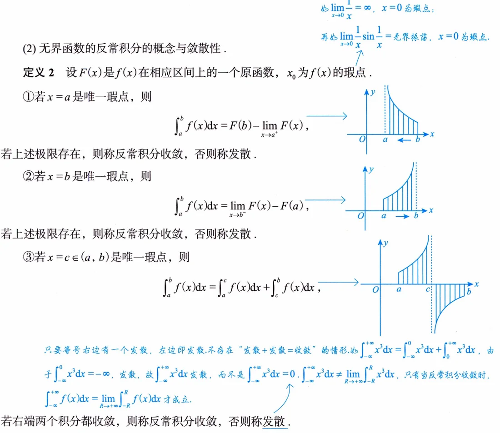
设 \(x_0\) 为 \(f(x)\) 的瑕点（使 \(f\) 在 \(x_0\) 邻域内无界的点，如 \(x=0\) 之于 \(\frac1x\)；又如 \(x=0\) 之于 \(\frac1x\sin\frac1x\)——无界振荡，也是瑕点）。设 \(F\) 为原函数：
- \(a\) 为唯一瑕点：\(\int_a^b f\,\mathrm{d}x=F(b)-\lim\limits_{x\to a^+}F(x)\)；
- \(b\) 为唯一瑕点：\(\int_a^b f\,\mathrm{d}x=\lim\limits_{x\to b^-}F(x)-F(a)\)；
- 瑕点 \(c\in(a,b)\) 在内部：必须拆成 \(\int_a^c+\int_c^b\)，两段都收敛才收敛。
书上两条提醒（印P266）：① \(\infty\) 和瑕点统称奇点，判别敛散时一个积分只能有一个奇点，出现两个及以上必须拆分，不存在"发散 + 发散 = 收敛"；② 前面"可积必有界"说的是定积分（黎曼积分），这里是反常积分（广义可积），两个概念不矛盾——瑕点处无界照样可能广义可积。
定理8.7 反常积分的比较判别法及其极限形式
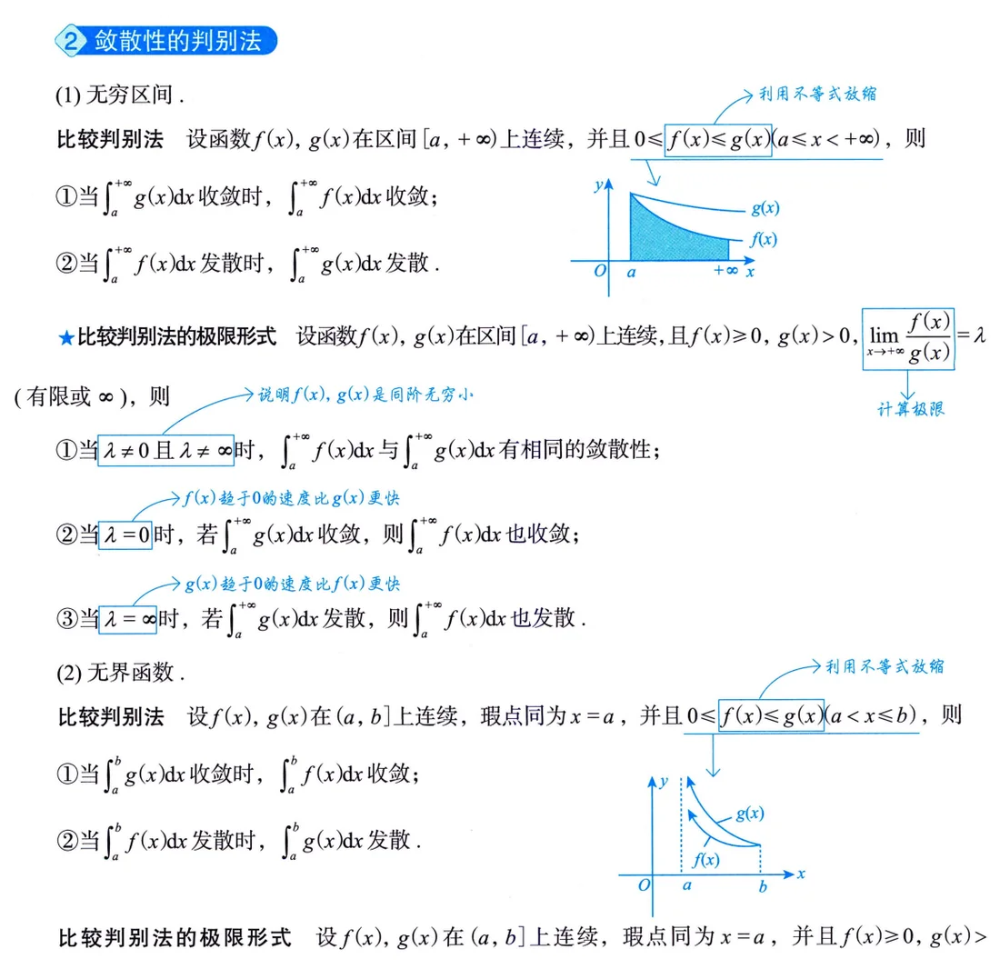
比较判别法：设 \(f,g\) 在 \([a,+\infty)\) 上连续且 \(0\le f(x)\le g(x)\)，则 \(\int_a^{+\infty}g\,\mathrm{d}x\) 收敛 \(\Rightarrow\int_a^{+\infty}f\,\mathrm{d}x\) 收敛（大收则小收）；\(\int_a^{+\infty}f\,\mathrm{d}x\) 发散 \(\Rightarrow\int_a^{+\infty}g\,\mathrm{d}x\) 发散（小散则大散）。极限形式：若 \(\lim\limits_{x\to+\infty}\dfrac{f(x)}{g(x)}=\lambda\)，则 \(\lambda\ne0\) 且 \(\lambda\ne\infty\) 时两者同敛散；\(\lambda=0\) 时 \(g\) 收敛则 \(f\) 收敛；\(\lambda=\infty\) 时 \(g\) 发散则 \(f\) 发散。瑕点版本把 \(x\to+\infty\) 换成 \(x\to a^+\)，结论平行。实操中极限形式占九成：找一个幂函数 \(g(x)=\frac{1}{x^p}\) 当标尺，算 \(\lim x^p f(x)\) 定阶。
定理8.8 两个 \(p\) 积分（判敛标尺）
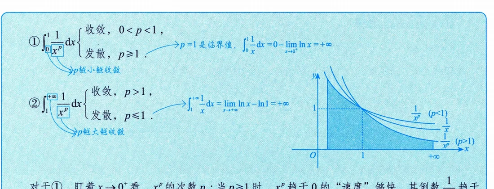
\[ \int_0^1\frac{\mathrm{d}x}{x^p}: \begin{cases} \text{收敛},& 0<p<1,\\ \text{发散},& p\ge 1, \end{cases} \qquad \int_1^{+\infty}\frac{\mathrm{d}x}{x^p}: \begin{cases} \text{收敛},& p>1,\\ \text{发散},& p\le 1. \end{cases} \]
方向别记反：小区间（0 到 1）\(p\) 越小越收敛，大区间（1 到 \(+\infty\)）\(p\) 越大越收敛，\(p=1\) 都是发散的临界值。会"发挥"（印P268）：\(x\to0^+\) 时 \(\sin x\sim x\)，所以 \(\int_0^1\frac{\mathrm{d}x}{\sin^p x}\) 的敛散与左式相同；\(x\to+\infty\) 时 \(ax+b\to+\infty\) 的速度与 \(x\) 同阶，\(\int_1^{+\infty}\frac{\mathrm{d}x}{(ax+b)^p}\)（\(ax+b\ge k>0\)）与右式相同。凡被积函数在奇点附近能等价变形的，全部化归到这两个标尺。
定理8.9 对数 \(p\) 积分与幂判敛补充结论
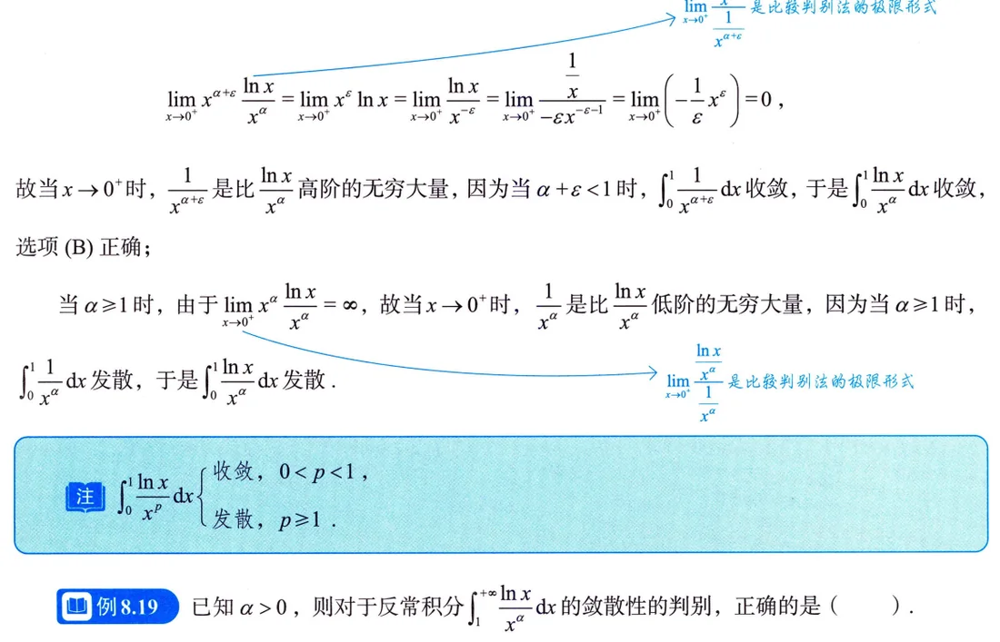
对数版本（印P271）：\(\int_0^1\frac{\ln x}{x^p}\,\mathrm{d}x\) 收敛 \(\iff0<p<1\)、发散 \(\iff p\ge1\)；\(\int_1^{+\infty}\frac{\ln x}{x^p}\,\mathrm{d}x\) 收敛 \(\iff p>1\)、发散 \(\iff0<p\le1\)。直观：\(\ln x\) 是"慢因子"，挪不动收敛域，但它在临界线 \(p=1\) 上坏事：\(\int_0^1\frac{\ln x}{x}\,\mathrm{d}x=-\infty\)、\(\int_1^{+\infty}\frac{\ln x}{x}\,\mathrm{d}x=+\infty\)，两个都发散。配套同页还有一条幂判敛补充结论：若 \(\lim\limits_{x\to+\infty}x^p f(x)=\lambda\ge0\) 且 \(p>1\)，则 \(\int_1^{+\infty}f(x)\,\mathrm{d}x\) 收敛——其实就是极限形式取 \(g=\frac1{x^p}\) 的直接翻版，遇到带参数、带对数的被积函数先算 \(\lim x^p f(x)\) 定阶即可。
定理8.10 对称区间上反常积分的奇偶性
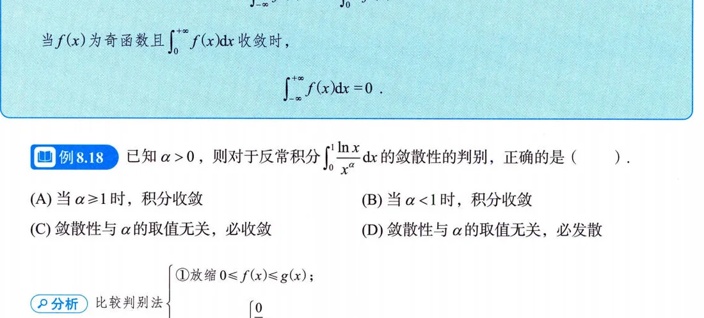
\(f(x)\) 为偶函数且 \(\int_0^{+\infty}f(x)\,\mathrm{d}x\) 收敛，则 \(\int_{-\infty}^{+\infty}f(x)\,\mathrm{d}x=2\int_0^{+\infty}f(x)\,\mathrm{d}x\)；\(f(x)\) 为奇函数且 \(\int_0^{+\infty}f(x)\,\mathrm{d}x\) 收敛，则 \(\int_{-\infty}^{+\infty}f(x)\,\mathrm{d}x=0\)。奇偶性的前提是收敛——例如 \(\int_{-\infty}^{+\infty}x^3\,\mathrm{d}x\ne0\)，它是发散的（\(\int_0^{+\infty}x^3\,\mathrm{d}x=+\infty\)），连"值"都谈不上。这与常义积分"\(\int_{-a}^{a}\) 奇函数直接为零"的习惯打法不同，多一道收敛检查。
典型例题精讲
原书本讲共 17 道例题（例8.1–例8.17），下面逐题收全。
例8.1 原函数定义的直接应用
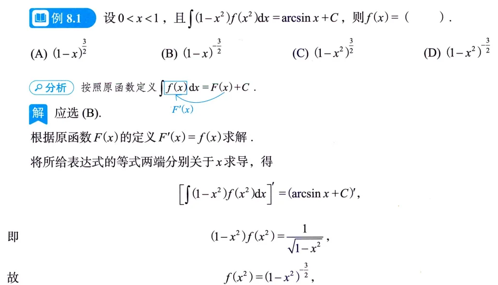
思路 认清结构：\(\int(1-x^2)f(x^2)\,\mathrm{d}x=\arcsin x+C\) 说明被积函数 \((1-x^2)f(x^2)\) 是 \(\arcsin x\) 的原函数，按定义两边对 \(x\) 求导。
要点 \(\left[\int(1-x^2)f(x^2)\,\mathrm{d}x\right]'=(\arcsin x+C)'\)，得 \((1-x^2)f(x^2)=\frac{1}{\sqrt{1-x^2}}\)，故 \(f(x^2)=(1-x^2)^{-\frac32}\)，令 \(x^2=t\) 换元得 \(f(x)=(1-x)^{-\frac32}\)，选 (B)。注：求导时整个 \((1-x^2)f(x^2)\) 是一体，别只对 \(f(x^2)\) 求导；换元后定义域收窄（\(t=x^2\ge0\) 那侧），本题只考表达式不受影响。
例8.2 分段函数的原函数
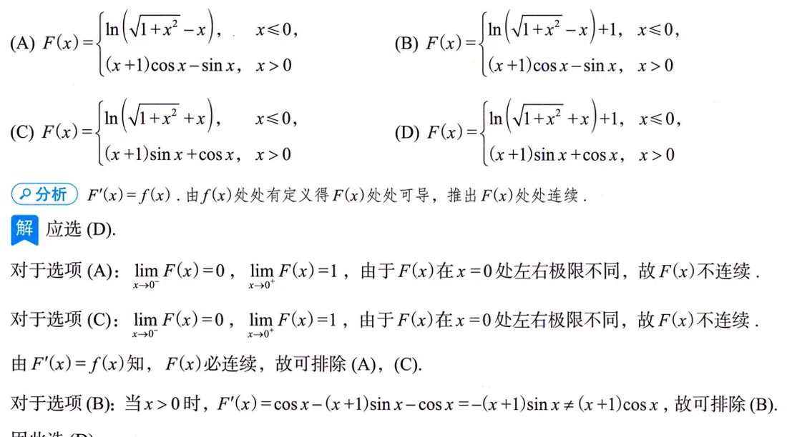
思路 \(f(x)=\begin{cases}\dfrac{1}{\sqrt{1+x^2}},&x\le 0\\ (x+1)\cos x,&x>0\end{cases}\) 处处有定义，原函数 \(F\) 须满足 \(F'(x)=f(x)\) 处处成立，于是 \(F\) 处处可导，进而处处连续——先用连续性筛选项。
要点 选项 (A)、(C) 在 \(x=0\) 处 \(\lim\limits_{x\to 0^-}F(x)=0\)，\(\lim\limits_{x\to 0^+}F(x)=1\)，左右极限不同，不连续，排除；(B) 在 \(x>0\) 时 \(F'(x)=\cos x-(x+1)\sin x-\cos x=-(x+1)\sin x\ne (x+1)\cos x\)，排除；验证 (D)：\(x\le 0\) 时 \(\dfrac{\mathrm{d}}{\mathrm{d}x}\ln\!\left(\sqrt{1+x^2}+x\right)=\dfrac{1}{\sqrt{1+x^2}}\)，\(x>0\) 时 \(\dfrac{\mathrm{d}}{\mathrm{d}x}\left[(x+1)\sin x+\cos x\right]=(x+1)\cos x\)，都吻合，选 (D)。注：筛选项的顺序是"先连续后可导"，分段点的左右极限一分钟排掉两个错项。
例8.3 原函数存在 vs 定积分存在（本讲灵魂题）
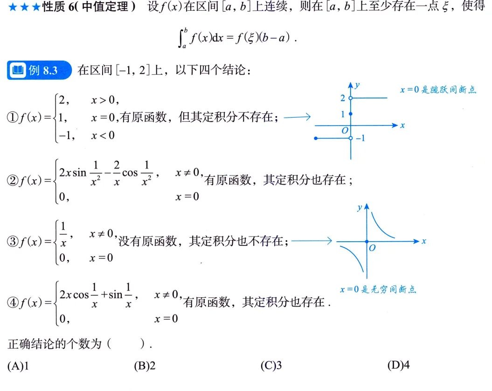
思路 逐条用两套存在定理检查：无原函数的依据是"含第一类或无穷间断点"；定积分不存在的依据是"无界"。
要点 ① 中 \(x=0\) 是跳跃间断点，任意包含 \(x=0\) 的区间上 \(f\) 必无原函数，但 \(f\) 有界、只有一个间断点，满足定积分存在定理，定积分存在——"有原函数"错，①错误；② 取 \(F(x)=x^2\sin\frac{1}{x^2}\)（\(x\ne 0\)），\(F(0)=0\)，可验证 \(F'(x)=f(x)\) 在 \((-\infty,+\infty)\) 成立，原函数存在，但 \(x\to 0\) 时 \(f(x)\) 无界，定积分不存在——"定积分也存在"错，②错误；③ \(x=0\) 是无穷间断点，无原函数，也无常义定积分，③正确；④ 取 \(F(x)=x^2\cos\frac{1}{x}\)（\(x\ne0\)），\(F(0)=0\)，则 \(F'(x)=f(x)\)，且 \(\left|f(x)\right|\le 2|x|\cdot 1+1\le 5\)，有界且只有一个振荡间断点，定积分也存在，④正确。两个正确，选 (B)。注：②④这类"振荡但有原函数"的反例是命题热点，\(x^2\sin\frac{1}{x^2}\)、\(x^2\cos\frac{1}{x}\) 这两个原函数值得记住；②同时说明"有原函数"与"定积分存在"互不包含。
例8.4 反函数图形的面积比较
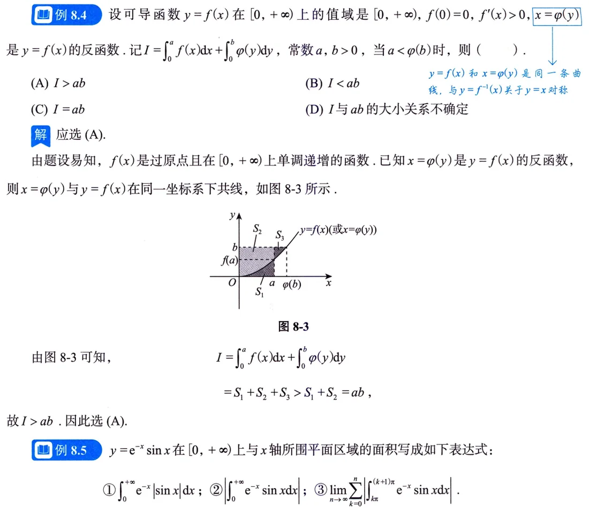
思路 设可导函数 \(y=f(x)\) 在 \([0,+\infty)\) 上的值域是 \([0,+\infty)\)，\(f(0)=0\)，\(f'(x)>0\)，\(x=\varphi(y)\) 是其反函数。记 \(I=\int_0^a f(x)\,\mathrm{d}x+\int_0^b \varphi(y)\,\mathrm{d}y\)（\(a,b>0\)），当 \(a<\varphi(b)\) 时比较 \(I\) 与 \(ab\)。两条路：几何上 \(\int_0^a f\) 是曲线下面积、\(\int_0^b\varphi\) 是（同一条曲线）左侧面积，两块面积与矩形 \(ab\) 比大小；代数上作差。
要点 由 \(f\) 严格增，\(a<\varphi(b)\iff f(a)<b\)。用恒等式 \(\int_0^a f(x)\,\mathrm{d}x+\int_0^{f(a)}\varphi(y)\,\mathrm{d}y=a\,f(a)\)（两块面积正好拼成 \(a\times f(a)\) 矩形），于是
\[ I=\int_0^a f(x)\,\mathrm{d}x+\int_0^{f(a)}\varphi(y)\,\mathrm{d}y+\int_{f(a)}^{b}\varphi(y)\,\mathrm{d}y = a f(a)+\int_{f(a)}^{b}\varphi(y)\,\mathrm{d}y>af(a)+a\,(b-f(a))=ab, \]
其中用到 \(y>f(a)\) 时 \(\varphi(y)>a\)（严格增），最后一步严格不等成立。故 \(I>ab\)，选 (A)。注：书上将结论总结为 \(\int_0^a f\,\mathrm{d}x+\int_0^b\varphi\,\mathrm{d}y\ge ab\)，等号当且仅当 \(b=f(a)\)（即 \(a=\varphi(b)\)）时成立；反函数积分恒等式"曲线下方 + 左侧 = 大矩形"是这类题的图底。
例8.5 含参变量 \(x\) 的积分化为累次积分
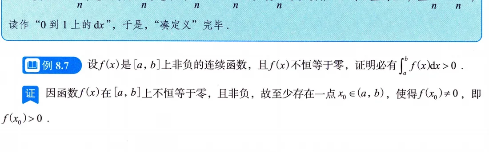
思路 \(f(x)\) 连续，把 \(\int_0^x f(t)(x-t)\,\mathrm{d}t\) 化成"先内后外"的累次积分。积分变量是 \(t\)，\(x\) 相对它是常数，但因子 \((x-t)\) 卡在积分号里面，直接求导不方便——先恒等变形。
要点 把 \(x-t=\int_t^x\mathrm{d}s\) 代入并交换累次积分次序（区域 \(0\le t\le s\le x\)，先对 \(t\) 积）：
\[ \int_0^x f(t)(x-t)\,\mathrm{d}t=\int_0^x f(t)\left[\int_t^x\mathrm{d}s\right]\mathrm{d}t =\int_0^x\left[\int_0^s f(t)\,\mathrm{d}t\right]\mathrm{d}s . \]
也可以直接拆项 \(x\int_0^x f(t)\,\mathrm{d}t-\int_0^x tf(t)\,\mathrm{d}t\)（例8.11 的做法），两个形式等价。注：这题是第9讲分部积分、第14讲交换积分次序的预热——"含 \(x\) 的因子要么提出去、要么想办法沉到积分限里"。
例8.6 凑定积分定义求数列极限
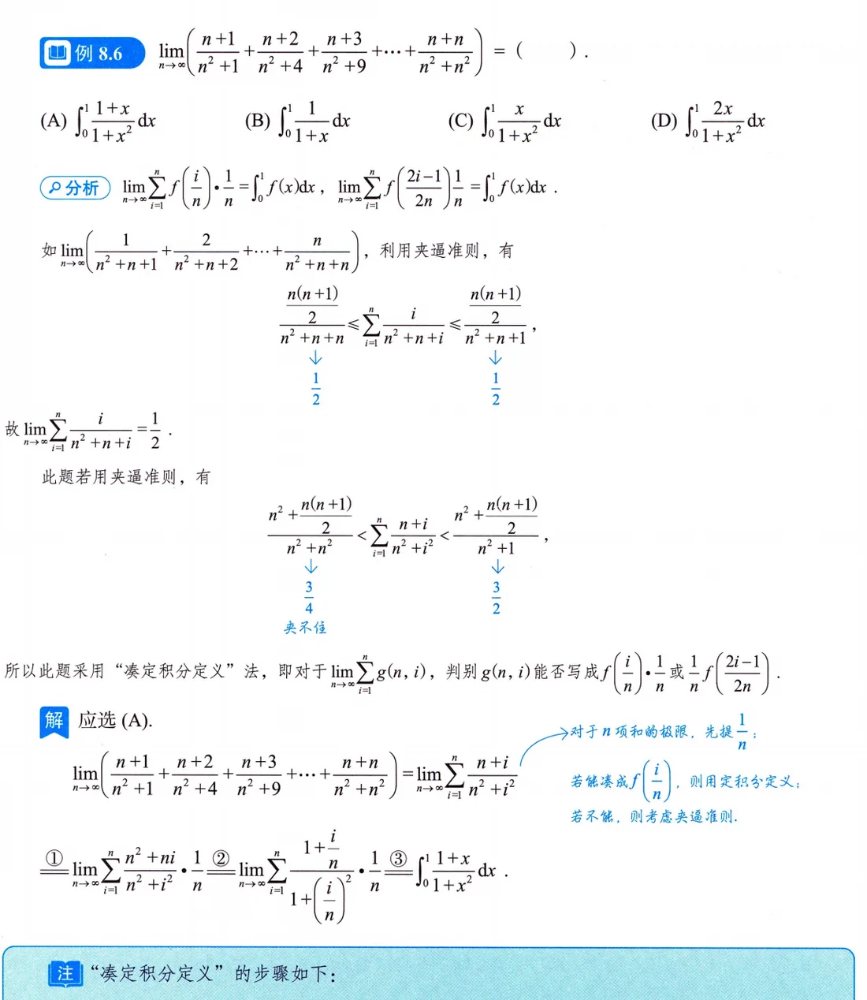
思路 \(n\) 项和的极限 \(\lim\limits_{n\to\infty}\sum_{i=1}^{n}\dfrac{n+i}{n^2+i^2}\)，先提 \(\frac1n\)，判断能否凑成 \(f\!\left(\frac{i}{n}\right)\)——能凑用定积分定义，不能凑才考虑夹逼准则。本题夹逼是"夹不住"的（下界极限 \(\frac34\)、上界极限 \(\frac32\)，两头不合并），所以走凑定义的路。
要点
\[ \lim_{n\to\infty}\sum_{i=1}^{n}\frac{n+i}{n^2+i^2} =\lim_{n\to\infty}\sum_{i=1}^{n}\frac{1+\frac{i}{n}}{1+\left(\frac{i}{n}\right)^2}\cdot\frac1n =\int_0^1\frac{1+x}{1+x^2}\,\mathrm{d}x , \]
选 (A)。注（印P258–259）：凑定义三步——①先提出 \(\frac1n\)；②再凑出 \(\frac{i}{n}\)；③把 \(\frac{i}{n}\) 读作"0 到 1 上的 \(x\)"，\(\frac1n\) 读作"\(\mathrm{d}x\)"。
例8.7 非负连续不恒为零则积分严格正
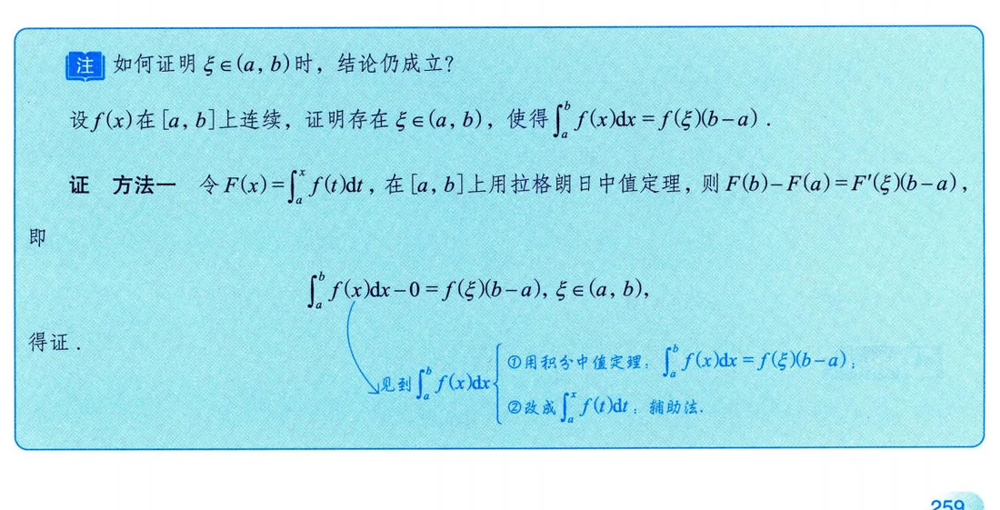
思路 证明：\(f(x)\) 在 \([a,b]\) 上非负、连续且不恒为零，则 \(\int_a^b f(x)\,\mathrm{d}x>0\)。保号性只给"\(\ge0\)"，要升级成严格不等，必须用连续性挖出一小块"确定正"的区间。
要点 不恒为零即存在 \(x_0\in[a,b]\) 使 \(f(x_0)>0\)。由 \(f\) 在 \(x_0\) 连续，存在 \(\delta>0\) 使 \([x_0-\delta,x_0+\delta]\subset[a,b]\)（端点情形取单侧邻域）且其上 \(f(x)\ge\frac{f(x_0)}{2}>0\)。于是
\[ \int_a^b f(x)\,\mathrm{d}x\ \ge\ \int_{x_0-\delta}^{x_0+\delta}f(x)\,\mathrm{d}x\ \ge\ 2\delta\cdot\frac{f(x_0)}{2}=\delta f(x_0)>0 . \]
注：这是定理8.3 那条注的正文依据；例8.9、例8.10 里"不恒等号"的严格化全靠它。
例8.8 积分中值定理及其证明、\(\xi\) 落在开区间
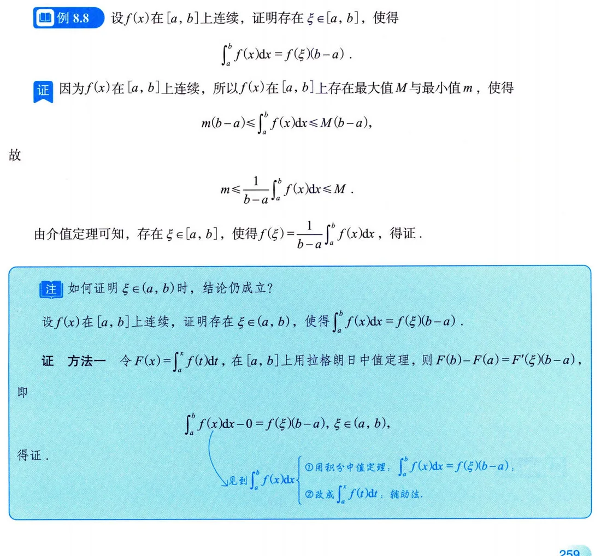
思路 闭区间版本：估值定理夹住平均值，再用介值定理。要点 \(m(b-a)\le\int_a^b f(x)\,\mathrm{d}x\le M(b-a)\)，故 \(m\le\frac{1}{b-a}\int_a^b f(x)\,\mathrm{d}x\le M\)，由介值定理存在 \(\xi\in[a,b]\) 使 \(f(\xi)=\frac{1}{b-a}\int_a^b f(x)\,\mathrm{d}x\)。
注（要证 \(\xi\in(a,b)\) 开区间，两种方法）：方法一，令 \(F(x)=\int_a^x f(t)\,\mathrm{d}t\)，对 \(F\) 在 \([a,b]\) 上用拉格朗日中值定理，\(F(b)-F(a)=F'(\xi)(b-a)\)，即 \(\int_a^b f\,\mathrm{d}x=f(\xi)(b-a)\)，\(\xi\in(a,b)\)；方法二，常数 \(k\) 法：令 \(k=\frac{1}{b-a}\int_a^b f(x)\,\mathrm{d}x\)，设 \(F(x)=\int_a^x f(t)\,\mathrm{d}t-k(x-a)\)，则 \(F(a)=F(b)=0\)，罗尔定理给出 \(\xi\in(a,b)\) 使 \(F'(\xi)=0\)。书上提醒：考研真题已考过，大题中可直接使用 \(k\) 法结论，不必再证。见到 \(\int_a^b f(x)\,\mathrm{d}x\)，要么用中值定理，要么改成 \(\int_a^x f(t)\,\mathrm{d}t\) 作辅助函数——这两板斧后面章节反复用。
例8.9 由积分条件证零点存在
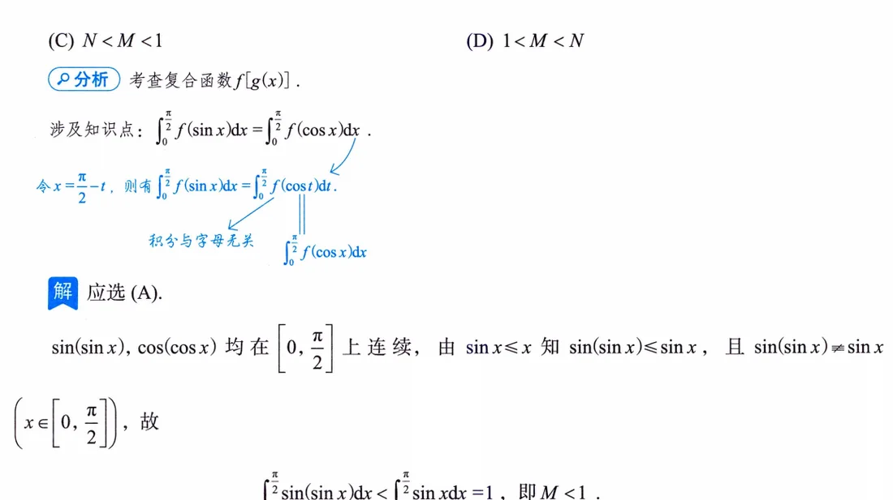
思路 设 \(f(x)\) 在 \([0,1]\) 上连续，且 \(\int_0^1 f(x)\,\mathrm{d}x=0\)、\(\int_0^1 xf(x)\,\mathrm{d}x=0\)，证明存在 \(\xi\in(0,1)\) 使 \(f(\xi)=0\)。看到"积分等于零 + 连续"，标准动作就是作变上限函数 \(F(x)=\int_0^x f(t)\,\mathrm{d}t\)，把积分条件翻译成 \(F\) 的端点条件，再上罗尔。
要点 令 \(F(x)=\int_0^x f(t)\,\mathrm{d}t\)，则 \(F\) 在 \([0,1]\) 上连续、在 \((0,1)\) 内可导（\(f\) 连续），且 \(F(0)=0\)，\(F(1)=\int_0^1 f(x)\,\mathrm{d}x=0\)。由罗尔定理，存在 \(\xi\in(0,1)\) 使 \(F'(\xi)=f(\xi)=0\)，得证。注：（站注）这道题只用第一个积分条件就能出零点；第二个条件 \(\int_0^1 xf(x)\,\mathrm{d}x=0\) 是加强弹药——配合分部积分 \(\int_0^1 xf\,\mathrm{d}x=\left[xF(x)\right]_0^1-\int_0^1 F(x)\,\mathrm{d}x=-\int_0^1 F(x)\,\mathrm{d}x\)（用 \(F(1)=0\)）可得 \(\int_0^1 F(x)\,\mathrm{d}x=0\)，对 \(F\) 再走一遍上面的流程，就能证出 \(f\) 在 \((0,1)\) 内至少有两个不同零点——同类加强版在真题里出现过，值得自己补一遍。
例8.10 利用代换与保号性比大小
思路（印P260–261）比较 \(M=\int_0^{\frac{\pi}{2}}\sin(\sin x)\,\mathrm{d}x\) 与 \(N=\int_0^{\frac{\pi}{2}}\cos(\cos x)\,\mathrm{d}x\)，核心武器是代换 \(\int_0^{\frac{\pi}{2}}f(\sin x)\,\mathrm{d}x=\int_0^\frac{\pi}{2}f(\cos x)\,\mathrm{d}x\)（令 \(x=\frac{\pi}{2}-t\)，区间再现的雏形）。
要点 由 \(\sin x\le x\)（且不恒等）知 \(\sin(\sin x)\le\sin x\)（且不恒等），用例8.7 的严格不等式结论得 \(M<\int_0^{\frac{\pi}{2}}\sin x\,\mathrm{d}x=1\)；而 \(\int_0^{\frac{\pi}{2}}\cos(\cos x)\,\mathrm{d}x\xlongequal{x=\frac{\pi}{2}-t}\int_0^{\frac{\pi}{2}}\cos(\sin t)\,\mathrm{d}t\)，由 \(\sin t\le t\) 及 \(\cos\) 在 \([0,\frac{\pi}{2}]\) 递减得 \(\cos(\sin t)\ge\cos t\)（且不恒等），故 \(N>\int_0^{\frac{\pi}{2}}\cos t\,\mathrm{d}t=1\)。综上 \(M<1<N\)，即 \(M<N\)，选 (A)。注：比大小题三板斧——换元统一被积结构、不等式放缩、严格化（例8.7）；"和 1 比较"是本题的巧劲。
例8.11 被积函数含 \(x\) 的变限积分求导
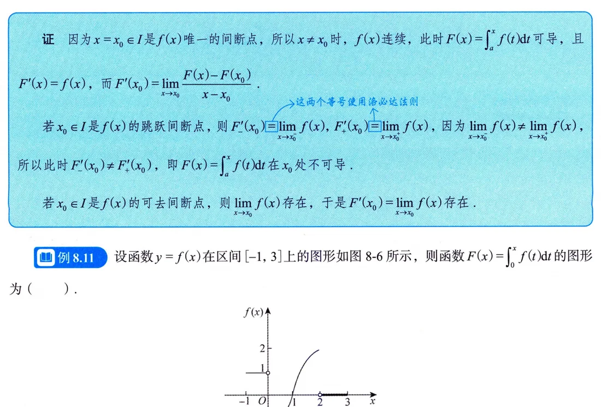
思路 \(f(x)\) 连续，\(F(x)=\int_0^x (x-t)f(t)\,\mathrm{d}t\)，求 \(F''(x)\)。被积函数含 \(x\)，\(F'=f\) 不能直接套——先拆项，把 \(x\) 提到积分号外，变成"函数乘积"再求导。
要点
\[ F(x)=x\int_0^x f(t)\,\mathrm{d}t-\int_0^x tf(t)\,\mathrm{d}t, \]
\[ F'(x)=\int_0^x f(t)\,\mathrm{d}t+x f(x)-x f(x)=\int_0^x f(t)\,\mathrm{d}t,\qquad F''(x)=f(x). \]
注：结合例8.5 看，\(F\) 就是那里的 \(\int_0^x\left[\int_0^t f(u)\,\mathrm{d}u\right]\mathrm{d}t\)，求两次导剥出 \(f\)——"含 \(x\) 先拆项提出"与"累次积分由外向里逐层求导"是同一件事的两面。
例8.12 变限积分在跳跃间断点处的行为
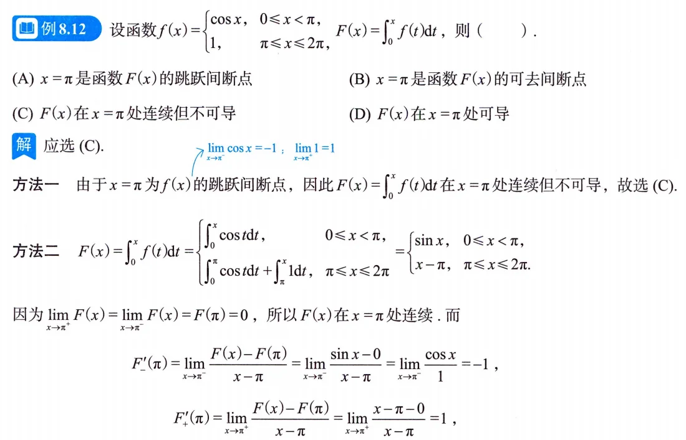
思路 \(f(x)=\begin{cases}\cos x,&x\in[0,\pi)\\ 1,&x\in[\pi,2\pi]\end{cases}\)，\(F(x)=\int_0^x f(t)\,\mathrm{d}t\)，问 \(F\) 在 \(x=\pi\) 处的性态。\(x=\pi\) 是 \(f(x)\) 的跳跃间断点（\(\lim\limits_{x\to\pi^-}\cos x=-1\)，\(\lim\limits_{x\to\pi^+}1=1\)），直接套定理8.6：\(F\) 在 \(x=\pi\) 处连续但不可导，选 (C)。
要点 老实算一遍更踏实：\(F(x)=\begin{cases}\sin x,&0\le x<\pi\\ x-\pi,&\pi\le x\le 2\pi\end{cases}\)，\(\lim\limits_{x\to\pi^-}F(x)=\lim\limits_{x\to\pi^+}F(x)=F(\pi)=0\)，连续；\(F'_-(\pi)=\lim\limits_{x\to\pi^-}\frac{\sin x-0}{x-\pi}=-1\)，\(F'_+(\pi)=\lim\limits_{x\to\pi^+}\frac{x-\pi-0}{x-\pi}=1\)，左右导数不等，不可导。注：函数 \(f\) 间断，其变限积分 \(F\) 却连续——"变限积分只要存在就必连续"在这题里看得明明白白。
例8.13 可去间断点处 \(F\) 可导但不是原函数
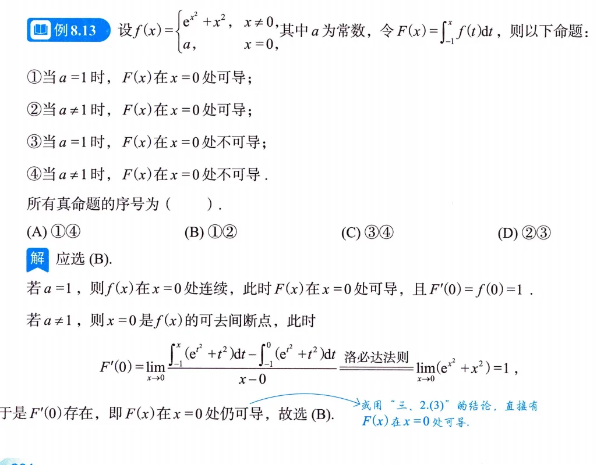
思路 \(f(x)=\begin{cases}\dfrac{\sin x}{x},&x\neq 0\\ 2,&x=0\end{cases}\)，讨论 \(F(x)=\int_0^x f(t)\,\mathrm{d}t\) 在 \(x=0\) 处的可导性。\(x=0\) 是可去间断点（\(\lim\limits_{x\to0}\frac{\sin x}{x}=1\ne f(0)=2\)），套定理8.6 后半条。
要点 \(F\) 在 \(x=0\) 处可导，且 \(F'(0)=\lim\limits_{x\to0}f(x)=1\ne f(0)=2\)。于是在 \(x\ne0\) 处 \(F'(x)=f(x)\)、在 \(x=0\) 处 \(F'(0)\ne f(0)\)——\(F\) 不是 \(f\) 的原函数。注（例8.13 注）：这正是"含第一类间断点必无原函数"的活体展示——\(f\) 有可去间断点，任何 \(F\) 都无法处处满足 \(F'=f\)，变限积分已经是"最像原函数"的那个了，也只差 \(x=0\) 这一个点。
例8.14 分段函数的变限积分（连续拼接）
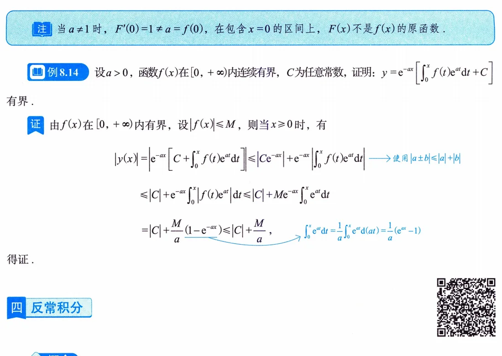
思路 \(f(x)=\begin{cases}x^2,&0\le x<1\\ 1,&x\ge1\end{cases}\)，求 \(F(x)=\int_0^x f(t)\,\mathrm{d}t\) 并讨论其连续性与可导性。分段函数的变限积分就分段算，拼接点单独验左右。
要点
\[ F(x)=\begin{cases}\dfrac{x^3}{3},&0\le x<1,\\[2mm] x-\dfrac{2}{3},&x\ge1,\end{cases} \]
其中 \(x\ge1\) 段用了区间可加性 \(\int_0^x=\int_0^1 t^2\,\mathrm{d}t+\int_1^x 1\,\mathrm{d}t=\frac13+x-1\)。\(x=1\) 处 \(\lim\limits_{x\to1^-}F=\lim\limits_{x\to1^+}F=\frac13=F(1)\)，连续；左导数 \(=\left.x^2\right|_{x=1}=1\)，右导数 \(=\left.1\right|_{x=1}=1\)，相等，可导。注：本题 \(f\) 在 \(x=1\) 处本身连续（左极限 \(1=f(1)\)），所以 \(F\) 既连续又可导，与例8.12、8.13 的"间断版"凑成三连——\(f\) 在拼接点连续、可去、跳跃三种情形下 \(F\) 的表现各不同，放一起记。
例8.15 反常积分敛散定参数
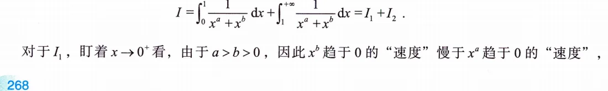
思路 \(a>b>0\)，\(I=\displaystyle\int_0^{+\infty}\frac{\mathrm{d}x}{x^a+x^b}\)。积分区间 \((0,+\infty)\) 有两个"疑似奇点"：\(0\)（瑕点）和 \(+\infty\)，按奇点唯一原则拆成 \(I=I_1+I_2=\int_0^1+\int_1^{+\infty}\)，两头分别与 \(p\) 积分比速度——谁跑得快，谁主导。
要点 \(x\to 0^+\) 时，\(b\) 小、\(x^b\) 趋于 0 的速度慢于 \(x^a\)，故 \(x^a+x^b\sim x^b\)，\(I_1\) 与 \(\int_0^1\frac{\mathrm{d}x}{x^b}\) 同敛散，需 \(b<1\)；\(x\to+\infty\) 时，\(a\) 大、\(x^a\) 趋于 \(+\infty\) 的速度快于 \(x^b\)，故 \(x^a+x^b\sim x^a\)，\(I_2\) 与 \(\int_1^{+\infty}\frac{\mathrm{d}x}{x^a}\) 同敛散，需 \(a>1\)。综上 \(a>1\) 且 \(b<1\)，选 (B)。注："和式取主导"（小的幂在 0 附近主导、大的幂在 \(\infty\) 处主导）是判敛定参数题的通用手感。
例8.16 双奇点的对数积分判敛
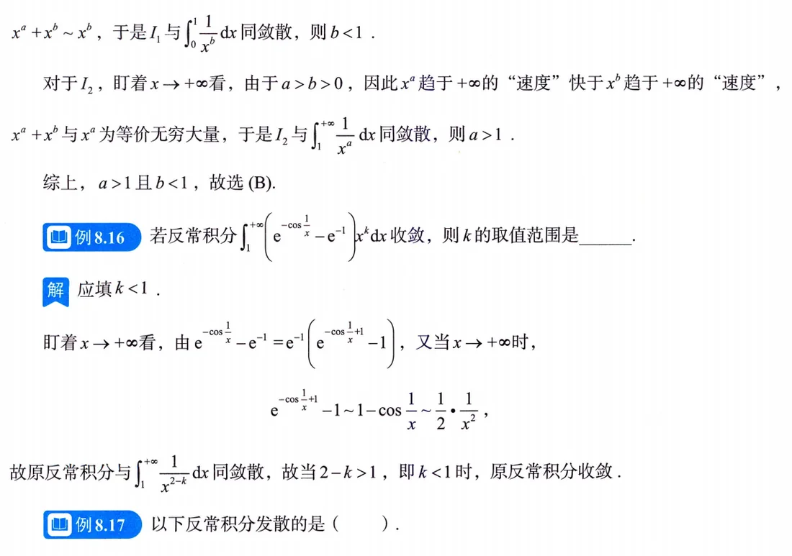
思路 讨论 \(\displaystyle\int_0^{+\infty}\frac{\ln x}{1+x^2}\,\mathrm{d}x\) 的敛散性。奇点两个：\(0\)（瑕点，\(\ln x\to-\infty\)）与 \(+\infty\)，拆 \(\int_0^1+\int_1^{+\infty}\) 分别判。
要点 \(x\to0^+\) 时 \(\frac{\ln x}{1+x^2}\sim\ln x\)（分母趋于 1），而 \(\int_0^1\ln x\,\mathrm{d}x=-1\) 收敛（对数在 0 附近可积），故第一段收敛；\(x\to+\infty\) 时 \(\frac{\ln x}{1+x^2}\) 与 \(\frac{1}{x^{\frac32}}\) 同阶甚至更低（\(\lim\limits_{x\to+\infty}\frac{\ln x/(1+x^2)}{1/x^{3/2}}=\lim\frac{\ln x}{\sqrt{x}\,(1+1/x^2)}\cdot\frac{x^2}{x^2}=0\)，比 \(\frac{1}{x^{3/2}}\) 还快地趋于 0），由 \(\int_1^{+\infty}\frac{\mathrm{d}x}{x^{3/2}}\) 收敛知第二段收敛。两段皆收敛，原积分收敛。注：（站注）这个积分还是对称美的样板：令 \(x=\frac1t\) 可证两段互为相反数，积分值恰为 \(0\)——判敛之外的延伸，留给动手验证。
例8.17 判敛综合：四选一找发散
思路（印P269–270）四个积分逐个验"奇点个数 + 比速度"，找发散的那一个。(A) \(\int_1^{+\infty}\left[\ln\!\left(1+\frac1x\right)-\frac{1}{1+x}\right]\mathrm{d}x\)；(B) \(\int_0^{+\infty}\frac{\ln x}{1+x^2}\,\mathrm{d}x\)；(C) \(\int_{-1}^{1}\frac{\mathrm{d}x}{\sin x}\)；(D) \(\int_0^{+\infty}\frac{\sin x}{1+x^2}\,\mathrm{d}x\)。
要点 (A) 用拉格朗日中值定理：\(\ln\!\left(1+\frac1x\right)=\ln(x+1)-\ln x=\frac{1}{\xi}\)（\(x<\xi<x+1\)），于是 \(0<\ln\!\left(1+\frac1x\right)-\frac{1}{1+x}<\frac{1}{x}-\frac{1}{1+x}=\frac{1}{x(x+1)}<\frac{1}{x^2}\)，由 \(\int_1^{+\infty}\frac{\mathrm{d}x}{x^2}\) 收敛知其收敛；(B) 即例8.16，收敛；(C) \(x\to0\) 时 \(\sin x\sim x\)，\(\int_{-1}^{1}\frac{\mathrm{d}x}{\sin x}\) 与 \(\int_{-1}^{1}\frac{\mathrm{d}x}{x}\) 同敛散——发散，且按定义要拆 \(\int_{-1}^{0}+\int_{0}^{1}\)，有一半发散即发散，选 (C)；(D) \(\left|\frac{\sin x}{1+x^2}\right|\le\frac{1}{1+x^2}\)，绝对收敛。注：(C) 的坑在于瑕点 \(x=0\) 落在区间内部——端点、内部的瑕点都必须拆开单独判；而 \(\frac1x\) 是偶函数这件事救不了它，"对称性抵消"的前提是收敛。
易错点与技巧
- 谈原函数、不定积分，必须指明区间（印P243）。"\(F'(x)=f(x)\)"只在区间上谈，不是逐点谈；\(F'=f\) 差一个点都不算原函数（例8.13）。
- 三张"存在性"牌别打混（印P243–256）：连续 ⟹ 有原函数；含第一类或无穷间断点 ⟹ 必无原函数；振荡间断点不确定（\(2x\sin\frac1x-\cos\frac1x\) 有原函数、\(\frac1x\sin\frac1x\) 没有，印P249）。而定积分存在只看"有界 + 坏点有限"，跳跃间断函数可积但无原函数——例8.3 考的就是这张牌，"有原函数"与"可积"互不包含。
- 极限与导数的四组单向箭头（印P246–248）：\(\lim f\) 存在 ⟹̸ 连续/可导；\(\lim f'\) 存在 ⟹̸ \(f'(x_0)\) 存在；\(f'(x_0)\) 存在 ⟹̸ \(\lim f'\) 存在（\(x^2\cos\frac1x\) 反例）。判断题最爱在这四条上做文章。
- 非负连续不恒为零，定积分严格大于零（印P255）；而极限世界 \(f>0\) 只能保 \(\lim f\ge0\)（戴帽不脱帽）。证严格不等式时这个差别是命门，标准动作见例8.7（挖邻域、取半高）。
- 变限积分 \(F(x)=\int_a^x f(t)\,\mathrm{d}t\) 只要存在必连续（印P262），"\(f\) 间断、\(F\) 连续"不是矛盾。\(f\) 的跳跃点处 \(F\) 不可导（左右导数 = \(f\) 的左右极限），可去点处 \(F\) 可导但 \(F'(x_0)\ne f(x_0)\)，此时 \(F\) 不是 \(f\) 的原函数（印P264，例8.13 注）。
- 被积函数含 \(x\) 的变限积分不能直接套 \(F'=f\)，先拆项把 \(x\) 提到积分号外（例8.11）；上下限都是函数时按"\(f(\text{上限})\times\)上限导数 − \(f(\text{下限})\times\)下限导数"展开（习题8.3）。
- 反常积分判敛：一个积分只允许一个奇点，多了必须拆（印P266）；\(\int_{-\infty}^{+\infty}\) 要拆两半各自收敛才行，\(\int_{-\infty}^{+\infty}x^3\,\mathrm{d}x\ne0\)（印P270）。
- \(p\) 积分方向口诀：小区间（0 到 1）\(p\) 越小越收敛，大区间（1 到 \(+\infty\)）\(p\) 越大越收敛；\(p=1\) 都是发散的临界值（印P268）。带 \(\ln\) 的版本临界线会被对数"顶歪"（印P271），别硬套。
- 凑定积分定义的固定流程（印P258–259）：提 \(\frac1n\) → 凑 \(\frac{i}{n}\) → 读成 \(\int_0^1\)。凑不成先放缩/夹逼改写，再凑（印P271 注）。分母有 \(n+i\) 提 \(n\)、有 \(n^2+i^2\) 提 \(n^2\)，都是套路。
- 中值定理 \(\int_a^b f\,\mathrm{d}x=f(\xi)(b-a)\) 想要 \(\xi\) 在开区间内，用变上限函数拉格朗日或常数 \(k\) + 罗尔（印P259–260）；\(k\) 法结论大题可直接用。
- 积分定义中两个"任取"与"无关"不能丢（印P252）：可积是"极限与取法无关"，特取 \(n\) 等分右端点只是计算手段——反过来说，凡能用 \(n\) 等分凑出的极限必与取法无关，这是凑定义合法性的来源。
- 定积分是数、变限积分是函数：\(\int_a^b f\,\mathrm{d}x\) 里换积分变量字母值不变（印P252–253），但把 \(b\) 换成 \(x\) 它就"活"了——做题时先分清手里的是数还是函数，再决定能不能求导、能不能用中值定理。
考点与方法补充（站注）
- （站注·真题大数据）本讲的考频定位：一元函数积分学的概念与性质整体属第一梯队：变限积分求导 + 极限的综合是选择题高频形式，原函数存在性与可积性的辨析是概念选择题常青树；反常积分敛散性属第二梯队（近 15 年出现 10 次以上），多以一道选择/填空稳定出现。命题趋势里"跨章节综合题比重上升"，落到本讲就是概念题越来越爱跟极限、导数嫁接。
- （站注）三张存在性牌的对照表（站方归纳，非原书表格）：① 原函数存在——看间断点类型：连续必有；第一类/无穷必无；振荡不定。② 定积分存在——看有界 + 坏点个数：四个充分条件 + 必要条件"可积必有界"。③ 变限积分——存在即连续；\(f\) 连续才可导。把三张牌摆在一起，例8.3、习题8.2 这类"N 个命题对几个"的题就是查表作业。
- （站注·方法论）张宇的学习主张：尽快结束纯听课阶段，自己动手最重要；基础阶段把"概念 + 基本计算"练扎实比多听课有用；证明题不能放弃（积分不等式、中值定理这类大题平时不动手考场上写不出来）。落到本讲：例8.7、例8.8、例8.9 三道证明题必须亲手写一遍，光看懂不算数。
- （站注·书系路线）配套材料：基础阶段《基础30讲》+《300题》，强化阶段《强化36讲》+《1000题》，冲刺做真题大全解（1987 年至今，重点近十年）——本讲讲完立刻去 300题 里找"积分概念"块练手，检验标准是随机抽题独立做对率。
- （站注）与第9讲的衔接：本讲管"存在与性质"，第9讲管"算"。第9讲的换元积分法、分部积分法（"反、对、幂、指、三"取 \(u\) 优先序）都以本讲的变限积分求导为逆操作；判敛用的"比速度"感觉也直接复用到第16讲级数判敛。把本讲的 \(p\) 积分标尺背死，第9讲算反常积分时才有"算完顺手验敛"的习惯。
- （站注·试卷结构）：数学一/三中高数占 56%（约 82/150 分），数学二占 78%；本讲概念题多以选择、填空出现，单题 5 分上下，是"性价比最高的防守板块"——不丢分比攻坚更重要。
知识清单自测
自测题
1. 设 \(f(x)=\begin{cases}1,&x>0\\ 0,&x=0\\ -1,&x<0\end{cases}\)，求 \(F(x)=\int_0^x f(t)\,\mathrm{d}t\) 的表达式，并讨论 \(F\) 在 \(x=0\) 处的连续性与可导性。
查看答案
解 分段积分：\(x>0\) 时 \(F(x)=\int_0^x 1\,\mathrm{d}t=x\)；\(x<0\) 时 \(F(x)=\int_0^x (-1)\,\mathrm{d}t=-x\)；\(x=0\) 时 \(F(0)=0\)。故 \(F(x)=|x|\)。\(x=0\) 是 \(f\) 的跳跃间断点（左右极限 \(1\) 与 \(-1\)），由定理8.6，\(F\) 在 \(x=0\) 处连续（\(\lim_{x\to0}|x|=0=F(0)\)）但不可导（\(F'_+(0)=\lim_{x\to0^+}f(x)=1\)，\(F'_-(0)=\lim_{x\to0^-}f(x)=-1\)，不等）。（原书习题8.1）
2. 设 \(f(x)\) 连续，\(F(x)=\displaystyle\int_{\frac{1}{x}}^{\ln x} f(t)\,\mathrm{d}t\)（\(x>0\) 且使式子有意义），求 \(F'(x)\)。
查看答案
解 上下限都是函数，按公式"上限代入乘上限导数 − 下限代入乘下限导数"：
\[ F'(x)=f(\ln x)\cdot\frac{1}{x}-f\!\left(\frac{1}{x}\right)\cdot\left(-\frac{1}{x^{2}}\right)=\frac{1}{x}f(\ln x)+\frac{1}{x^{2}}f\!\left(\frac{1}{x}\right). \]
别丢了下限导数前的负号——它把 \(-\frac{1}{x^2}\) 变成 \(+\frac{1}{x^2}\)。（原书习题8.3）
3. 求 \(\lim\limits_{n\to\infty}\left(\dfrac{1}{\sqrt{n^2+n}}+\dfrac{1}{\sqrt{n^2+2n}}+\cdots+\dfrac{1}{\sqrt{n^2+n^2}}\right)\)。
查看答案
解 原式 \(=\lim\limits_{n\to\infty}\sum\limits_{i=1}^{n}\frac{1}{\sqrt{n^2+ni}}=\lim\limits_{n\to\infty}\sum\limits_{i=1}^{n}\frac{1}{\sqrt{1+\frac{i}{n}}}\cdot\frac1n=\int_0^1\frac{\mathrm{d}x}{\sqrt{1+x}}=2\sqrt{1+x}\Big|_0^1=2\sqrt2-2\)。分母提 \(n\)（最高次项），凑出 \(\frac{i}{n}\) 与 \(\frac1n\)，读成 \([0,1]\) 上的积分。（原书习题8.4）
4. 设 \(M=\displaystyle\int_{-\frac{\pi}{2}}^{\frac{\pi}{2}}\frac{\sin x}{1+x^2}\,\mathrm{d}x\)，\(N=\displaystyle\int_{-\frac{\pi}{2}}^{\frac{\pi}{2}}(\sin^3 x+\cos^2 x)\,\mathrm{d}x\)，\(P=\displaystyle\int_{-\frac{\pi}{2}}^{\frac{\pi}{2}}(x^2+\sin^3 x)\,\mathrm{d}x\)，比较 \(M,N,P\) 的大小。
查看答案
解 对称区间先拆奇偶：\(\dfrac{\sin x}{1+x^2}\) 与 \(\sin^3 x\) 是奇函数，积分为零。\(M=0\)；\(N=\int_{-\frac{\pi}{2}}^{\frac{\pi}{2}}\cos^2 x\,\mathrm{d}x=\dfrac{\pi}{2}\)；\(P=\int_{-\frac{\pi}{2}}^{\frac{\pi}{2}}x^2\,\mathrm{d}x=\dfrac{2}{3}\left(\dfrac{\pi}{2}\right)^3=\dfrac{\pi^3}{12}\)。由 \(\dfrac{\pi^3}{12}>\dfrac{\pi}{2}>0\)（\(\pi^2>6\)），得 \(M<N<P\)。（原书习题8.5）
5. 设 \(F(x)=\int_0^x (t-[t])\,\mathrm{d}t\)，其中 \([x]\) 表示不超过 \(x\) 的最大整数，求 \(F'_-(1)+F'_+(1)\)。
查看答案
解 记 \(f(x)=x-[x]\)，其图形是锯齿波，\(x=1\) 是跳跃间断点（\(\lim\limits_{x\to1^-}f=1\)，\(\lim\limits_{x\to1^+}f=0\)）。由变限积分在跳跃间断点处的性质：\(F'_-(1)=\lim\limits_{x\to1^-}f(x)=1\)，\(F'_+(1)=\lim\limits_{x\to1^+}f(x)=0\)，故 \(F'_-(1)+F'_+(1)=1\)。（原书习题8.6，也可用导数定义分段硬算验证）
6. 讨论 \(\displaystyle\int_2^{+\infty}\frac{1}{x\ln^p x}\,\mathrm{d}x\) 的敛散性，其中 \(p\) 为任意实数。
查看答案
解 ①\(p=1\) 时，\(\int_2^{+\infty}\frac{\mathrm{d}x}{x\ln x}=\ln|\ln x|\Big|_2^{+\infty}=+\infty\)，发散；②\(p\ne 1\) 时，\(\int_2^{+\infty}\frac{\mathrm{d}x}{x\ln^p x}=\frac{1}{1-p}(\ln x)^{1-p}\Big|_2^{+\infty}\)，当 \(p>1\) 时 \(\lim\limits_{x\to+\infty}(\ln x)^{1-p}=0\)，收敛；当 \(p<1\) 时趋于 \(+\infty\)，发散。综上：\(p>1\) 收敛，\(p\le 1\) 发散。（原书习题8.7）